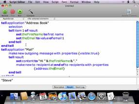
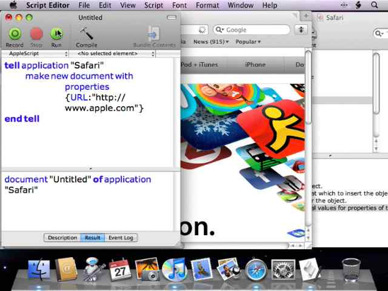
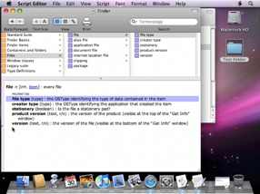
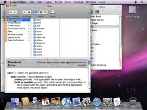
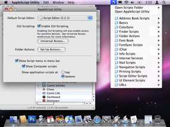
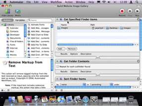
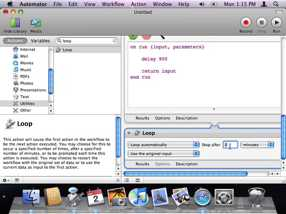
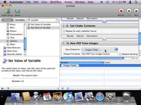
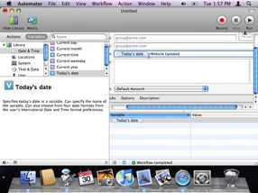

Peachpit Automation Training Videos
Join automation expert, Ben Waldie, as he explores creative uses of AppleScript and Automator. These episodes are from the Mac Automation Made Simple series. Posted with permission of Peachpit and the author.
|
021 • Getting Started: Variables in AppleScript  In this episode of Mac Automation Made Simple, Ben Waldie continues discussing AppleScript's core language, with a focus on variables. Watch as Ben demonstrates how to use variables to store values from Address Book, and create a new message in Mail. |
020 • Getting Started Scripting Applications  In this episode of Mac Automation Made Simple, Ben Waldie, author of Automator for Mac OS X 10.5 Leopard: Visual QuickStart Guide demonstrates techniques for getting started writing AppleScripts to control applications in Mac OS X. Learn how to display a Web page in Safari, start the visualizer in iTunes, and more. |
019 • Intro to AppleScript Dictionaries: Part 2  In this episode of Mac Automation Made Simple, Ben Waldie continues discussing how to navigate application AppleScript dictionaries in Mac OS X. This episode focuses on understanding elements and attributes, also known as classes and properties. |
||
|
018 • Intro to AppleScript Dictionaries: Part 1  In this episode of Mac Automation Made Simple, Ben Waldie begins discussing AppleScripting applications in Mac OS X by exploring how to open and navigate application AppleScript dictionaries. Ben reviews both application commands and parameters. |
017 • Introducing AppleScript and Script Editor  In this episode of Mac Automation Made Simple, Ben Waldie provides an introduction to the primary AppleScript components in Mac OS X, including the AppleScript Utility, Folder Actions Setup application, example scripts, and Script Editor. |
016 • Extending Automator with Actions  In this episode of Mac Automation Made Simple, Ben Waldie demonstrates how to extend the power of Automator with third-party actions, allowing you to build Web photo galleries, a birthday calendar in iCal, a photo contacts sheet in InDesign, and more. |
||
|
015 • Creating a Looping Automator Workflow  In this episode of Mac Automation Made Simple, Ben Waldie demonstrates how to create a simple looping Automator workflow, using the 'Loop' action, to download current weather satellite images and use them as your Desktop wallpaper. |
014 • Advanced Use of Workflow Variables  In this episode of Mac Automation Made Simple, Ben Waldie demonstrates advanced usage of workflow variables in Automator, for the purpose of storing action results, and referencing them later. Variables are a powerful feature of Automator in Leopard. |
 In this episode of Mac Automation Made Simple, Ben Waldie demonstrates how to get started using variables to incorporate dynamic content into Automator workflows. Variables are a powerful feature of Automator in Leopard. |
DISCLAIMER: Mention of third-party websites and products is for informational purposes only and constitutes neither an endorsement nor a recommendation. MACOSXAUTOMATION.COM assumes no responsibility with regard to the selection, performance or use of information or products found at third-party websites. MACOSXAUTOMATION.COM provides this only as a convenience to our users. MACOSXAUTOMATION.COM has not tested the information found on these sites and makes no representations regarding its accuracy or reliability. There are risks inherent in the use of any information or products found on the Internet, and MACOSXAUTOMATION.COM assumes no responsibility in this regard. Please understand that a third-party site is independent from MACOSXAUTOMATION.COM and that MACOSXAUTOMATION.COM has no control over the content on that website. Please contact the vendor for additional information. All videos are linked with the expressed permission of their respective owners.